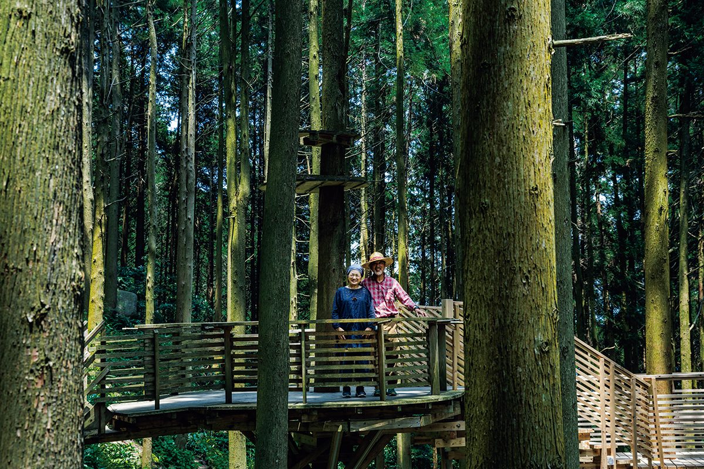
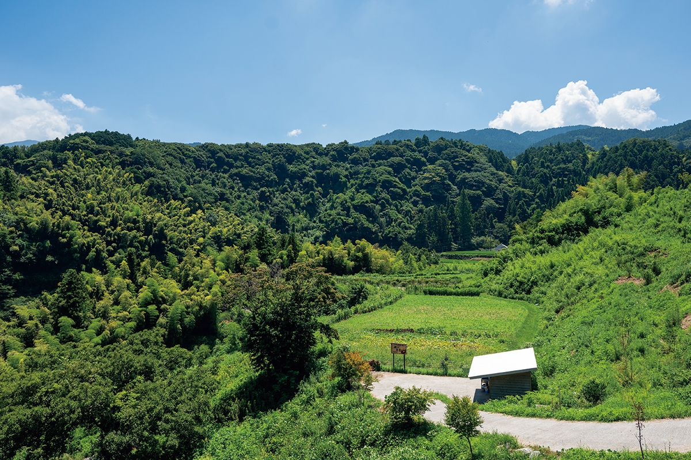
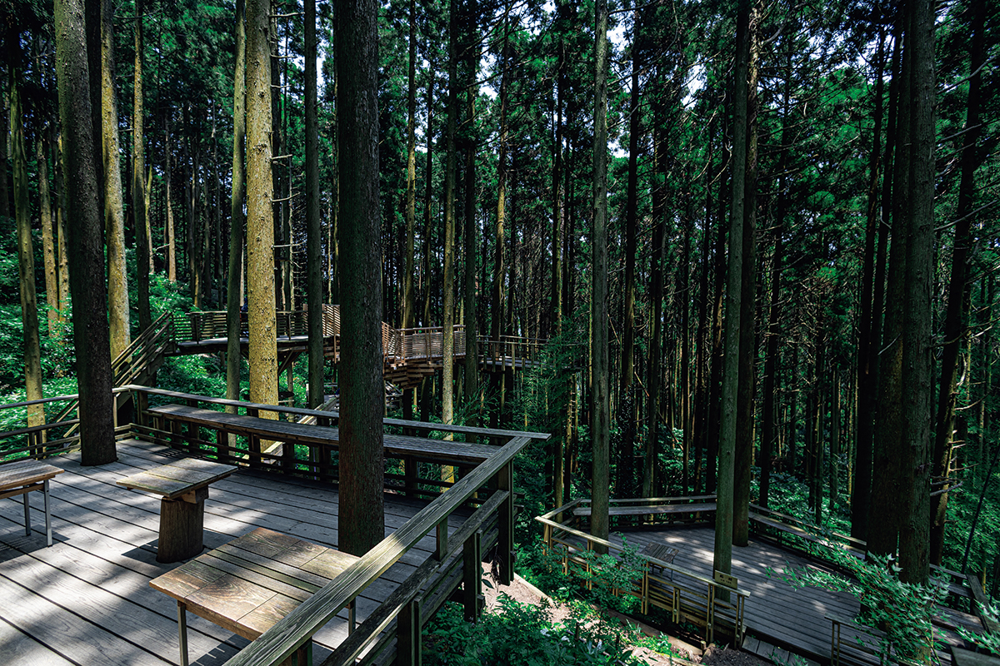
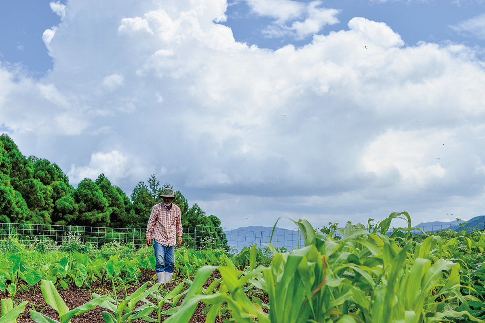
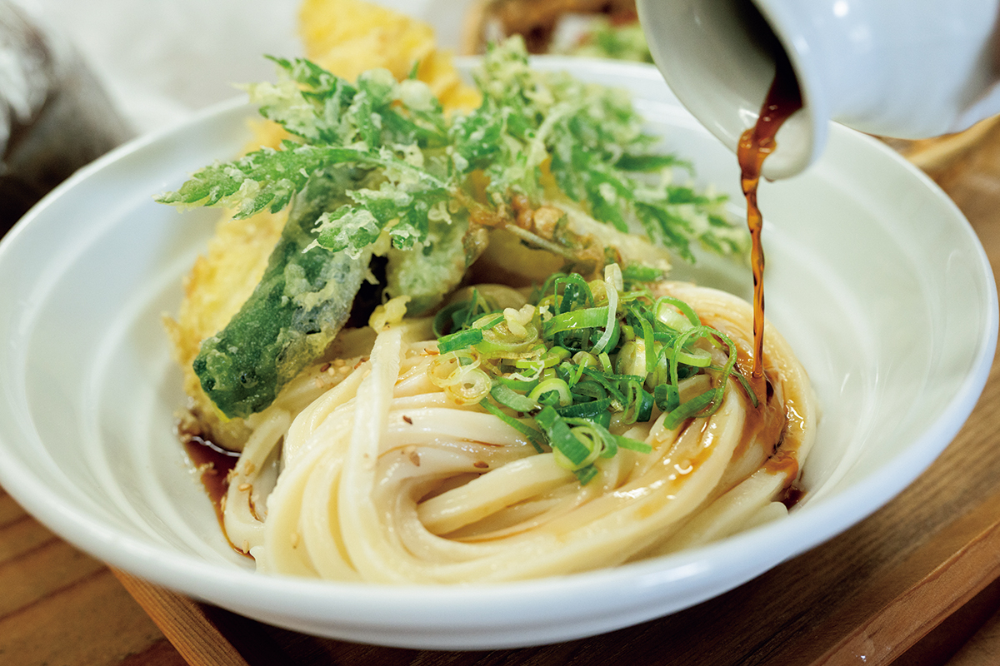
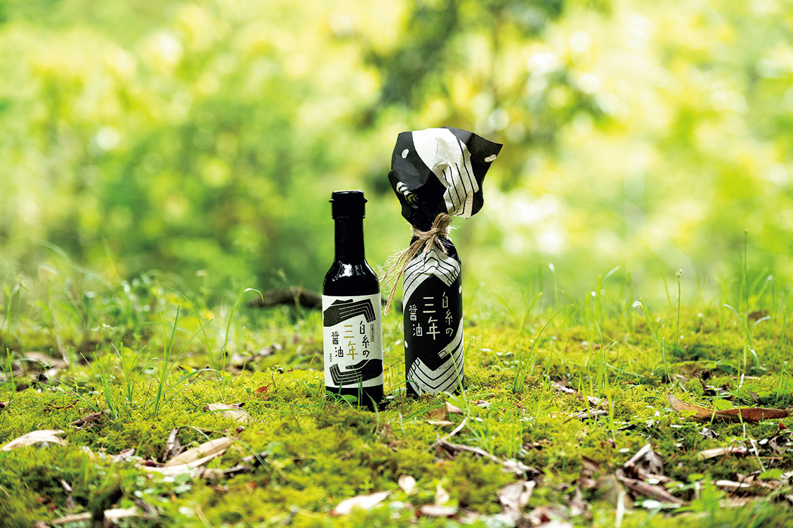
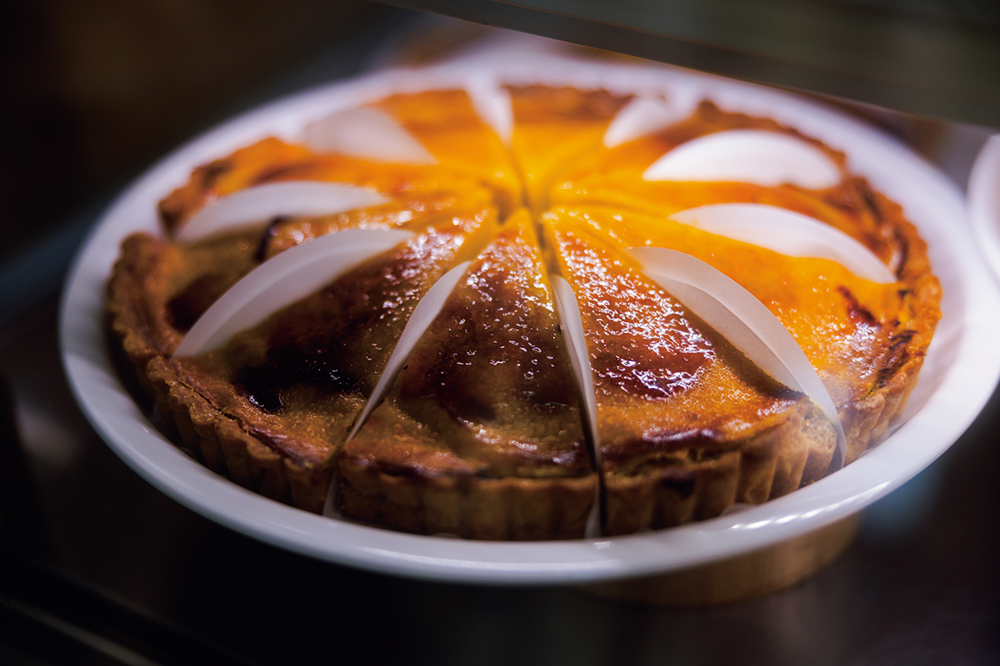
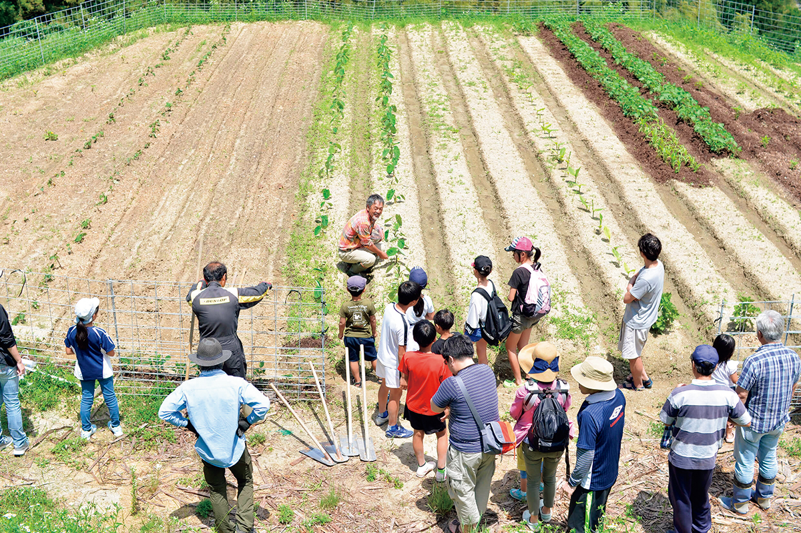
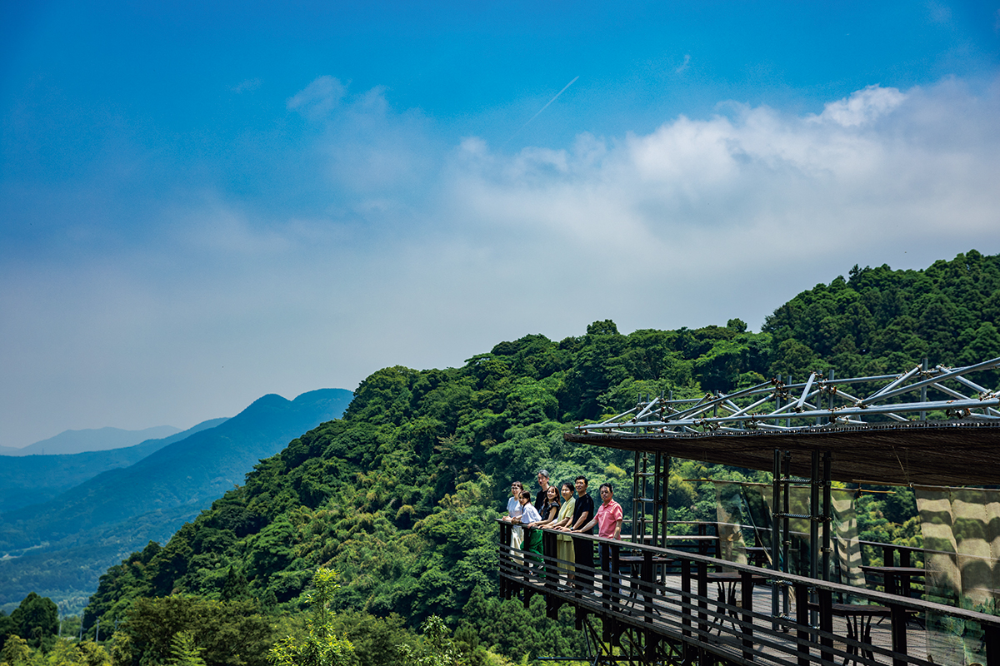

Префектура Фукуока · Итосима · природа
«Сираито-но мори» в Итосиме: лес, который лечат чашкой кофе

Итосиму знают по пляжам и приморским кафе, но в её горах есть место совсем другого рода. Супруги купили запущенный лес, чтобы собирать в нём людей, и теперь гости пьют здесь кофе среди деревьев, а выручка идёт на то, чтобы этот лес вылечить.
Лес
Гора для второй жизни
Ферма «Сираито-но мори», то есть «Лес Сираито», прячется глубоко в горах Итосимы, приморского города на западе префектуры Фукуока. На большой территории разбросаны поля и огороды, стоят закусочная с удоном и кондитерская, а в глубине леса устроено кафе под открытым небом с домиками и террасами на деревьях. Шумит листва, перекликаются птицы, и многие приезжают сюда просто отдохнуть в зелени.

«Вообще-то этот лес больной», признаётся хозяин. Он дипломированный архитектор, его жена много лет держала ресторан. Во второй половине жизни супруги захотели создать место, куда будут приезжать люди, и купили гору. С этой покупки и началось возрождение леса. В 2025 году их работа получила главную награду премии JR Kyushu за развитие туризма на Кюсю.
«Когда я впервые вошла в лес, меня поразило, что там лежит почти сорок поваленных деревьев», вспоминает хозяйка. Брошенные посадки никто не прореживал, деревьям не хватало места для корней, и они падали одно за другим.
Кафе
Кофе, который платит за бензопилу
Чтобы гости своими глазами увидели, в каком состоянии лес, супруги открыли кафе и нарочно оставили упавшие стволы на месте.
«Гости любуются лесом за чашкой кофе, на выручку мы покупаем масло для бензопилы, прореживаем деревья и так бережём лес»
хозяин фермы

Домики на деревьях собраны без единого гвоздя: их складывают из брёвен, оставшихся после прореживания. Настилы устроены так, что их можно переставить, когда деревья подрастут. За этим стоит простая мысль хозяев: «Ради выгоды мы разоряли лес. Значит, теперь наша очередь подстраиваться под него».
Ферма
Всё началось с трёх гектаров целины
Вторая опора хозяйства это земледелие. Супруги расчистили около 3,3 гектара и распахали заброшенные поля. Теперь здесь без химических удобрений и пестицидов растят рис, хлебные злаки, сою и овощи, а урожай идёт в закусочную и кондитерскую.

Закусочную «Сираито удон Ясудзи» ведут дочь хозяев с мужем и их сын. Удон здесь режут вручную. Фирменное блюдо «Ясудзи буккакэ удон» подают с темпурой из семи овощей со своих грядок, от моркови до дайкона, и сладость этих овощей по-настоящему удивляет.


В кондитерской «Мидори-но ото» («Звук зелени») сотрудники ищут, что можно сделать из лимонов и других фруктов, собранных на горе. Особенно любят здешние торты и киши.

Дети
Детская ферма и наследники
Десять раз в год на ферме проходят занятия для детей. За сезон они сажают рис, собирают урожай, толкут из него моти и даже плетут симэнаву, праздничный жгут из рисовой соломы. В остальное время тоже можно приехать и провести день на природе.

«Когда видим, как люди радуются в этом лесу, хочется плакать от счастья. Чтобы место, где можно насладиться природой, жило и дальше, мы хотим вырастить своих суперзвёзд, то есть наследников»
хозяева фермы
Ферма открылась в 2018 году. В лучшие дни сюда приезжает до 800 человек, за год около 100 000. Так у приморской Итосимы появилась своя горная сторона.
Члены жюри премии тоже не остались в стороне. «У искусственных лесов Японии большие проблемы, и я был удивлён, что кто-то занимается прореживанием так весело и изобретательно», признался один из них. Архитектор из жюри добавила: «Семья сама расчистила место, куда раньше никто не приходил, и всё делает своими руками. Это придаёт сил».

«Сираито-но мори», закусочная «Сираито удон Ясудзи»
- Адрес
- префектура Фукуока, Итосима, Сираито, 561
- Телефон
- +81 92-324-3883
- Часы работы
- 11:00–15:00
- Выходные
- понедельник, бывают и другие нерабочие дни
Фото: Хиромаса Оцука.